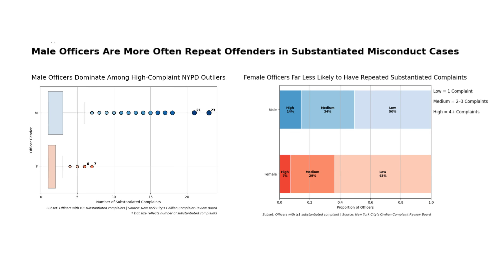
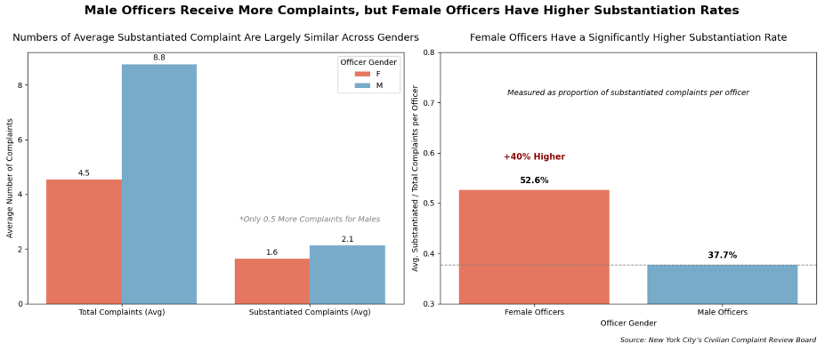

Male officers are more prone to substantiated complaints than female officers.
FOR the Proposition

Design Decisions and Rationale:
-
Including Two Visuals — Boxplot of Outlier Officers & Bracketed Complaint Distribution:
Score: 2 (Earnest)
The boxplot captures extreme substantiated complaint outliers—rare but impactful. The bracketed bar chart complements this by showing broader complaint distributions across all officers. Together, they illustrate both the severity and scale of male officer misconduct, making the argument more persuasive than either visualization alone. -
Boxplot with Dot Overlay for Outliers
Score: 2 (Earnest)
This visual isolates substantiated complaint outliers by gender, clearly showing the concentration of extreme high counts among male officers. The use of boxplots maintains statistical integrity while directing attention to the most severe cases. -
Dot Color Reflects Complaint Severity Bin Using D3 Palettes
Score: 1.5 (Earnest)
Dot colors follow a D3-style sequential color scale (light to dark), indicating severity tiers (e.g., 6–10, 11–15, etc.). This dual encoding of size + color increases visual clarity while staying transparent about the distribution. -
Clear Titling, Category Labels, and Footnotes with Citation
Score: 1.0 (Earnest)
The visualization includes a direct and persuasive title, inline category labels on bars, explanatory footnotes, and a citation of the data source and course context. These elements enhance transparency and readability, helping the audience quickly grasp the argument while acknowledging data filtering choices and origin. -
Dot Size Scales With Complaint Volume
Score: -1.5 (Deceptive)
By enlarging dots based on the number of substantiated complaints, the graphic draws strong visual attention to repeat offenders—possibly overstating their frequency relative to the rest of the data. Although based on true values, the exaggerated sizing frames these officers as especially alarming and may skew viewer perception toward outliers. -
Filtered to Include Only Officers with ≥3 Substantiated Complaints
Score: -1 (Deceptive)
By excluding officers with fewer than three substantiated complaints, the visualization amplifies the gender gap in repeat offenses. While the filter helps emphasize high-frequency offenders, it omits a large portion of the population and skews the perceived scale of the issue toward more extreme cases.
AGAINST the Proposition

Design Decisions and Rationale:
-
Including Both Visuals: Average Complaint Volume vs. Substantiation Rate
Score: 2 (Earnest)
This graph shifts focus from raw counts to the likelihood that a complaint is substantiated, highlights a meaningful tension: male officers are more complained about, but female officers' complaints are more likely to be substantiated. This nuanced narrative could not be captured by a single graph alone, revealing that female officers have a 40% higher average substantiation rate. -
Y-Axis Truncation on Substantiation Rate Plot
Score: -1.5 (Deceptive)
Setting the axis minimum to 0.3 (instead of 0) exaggerates the vertical gap between genders’ substantiation rates. This framing makes the +40% difference more visually impactful. -
Direct Annotation: “+40% Higher” and Horizontal Baseline Line
Score: 1.5 (Earnest)
The text clearly explains the magnitude of the difference while a dashed line grounded at the male average gives viewers a reference point. It transparently quantifies the statistical gap in a persuasive way. -
Annotation, Title, and Source Note
Score: 0.5 (Mildly Earnest)
The chart title and annotation (“Only 0.5 More Complaints for Males”) intentionally reframe the numeric difference as insignificant. The lighter font color and placement below the bar reduce visual weight, encouraging the viewer to discount the magnitude. Including the source as a formal footnote adds credibility, helping the visualization appear neutral while subtly guiding interpretation.
Final Reflection
Throughout this design process, I found it challenging to balance persuasiveness with ethical representation of data. Creating individual visualizations was technically straightforward—plotting distributions, customizing labels, and adjusting aesthetics—but deliberately shaping the viewer’s interpretation without outright falsifying data required much more complexity. For example, choosing to truncate axes, filter data to highlight repeat offenders, or selectively annotate differences revealed how easy it is to sway perception with subtle design choices. It was surprising how two truthful graphs created with the same dataset could convey nearly opposite messages depending on what was emphasized.
This experience shifted how I define ethical analysis and visualization. I now see it not as a binary between honest and dishonest, but as a continuum of framing choices, each with trade-offs. Ethical visualization involves intentional design with awareness of how framing affects interpretation, especially when dealing with sensitive topics like misconduct and identity. Simply stating the truth is not enough—responsible design also involves contextualizing what is not shown and anticipating how viewers might be misled by omission or visual emphasis.
Ultimately, I believe persuasive choices are acceptable when they are transparent, replicable, and acknowledge uncertainty or bias. Techniques like filtering or axis truncation become misleading when their effect is hidden or when they suppress meaningful counter-evidence. Ethical boundaries aren't always clear, but a useful test is whether an informed viewer, after seeing the visualization, could reasonably understand both what the data shows and what it doesn’t. The goal isn’t to avoid persuasion, but to make sure that persuasion doesn’t come at the cost of clarity, fairness, or trust.